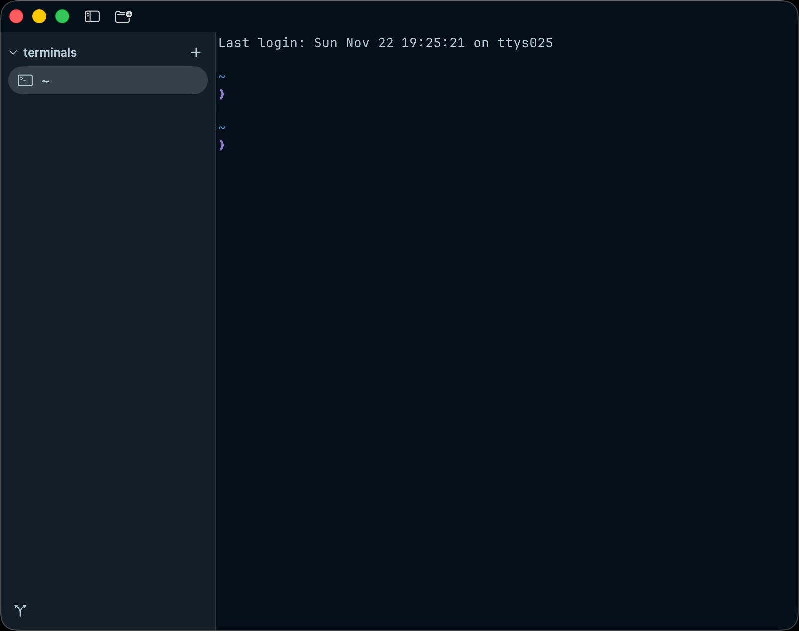
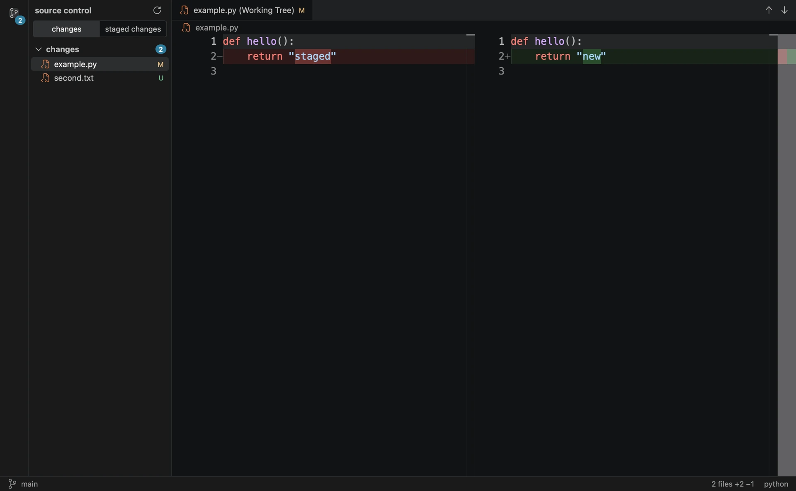

your projects.
one terminal.
keep shells, dev servers, and coding agents in the same mac window. group tabs by folder and split a tab when you need two things in view.
native macos app · built on ghostty

read what changed,
side by side.
open file → git changes… from a terminal in your repo. switch between staged and unstaged changes, see the line totals, and read syntax-highlighted diffs without leaving senterm.

try senterm
preview builds are available as a universal macos disk image for apple silicon and intel. sign in to github, open a successful build, and download the senterm-macos-universal artifact.
the preview is not notarized by apple. macos may warn on first launch.